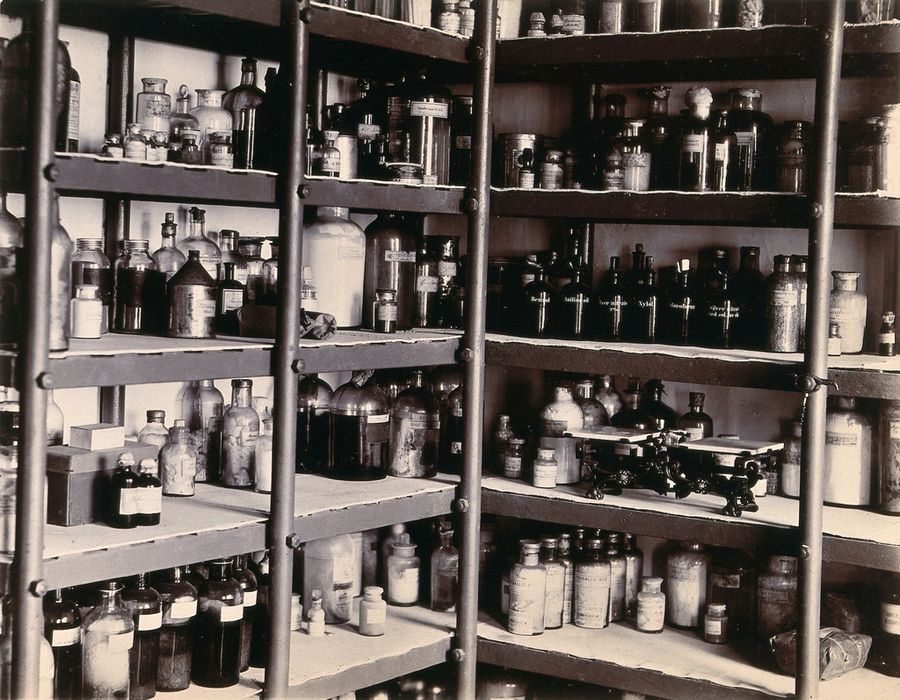

中国、ロシアから詐欺容疑者の身柄引き渡しを受けるTrung Quốc dẫn độ nghi phạm lừa đảo từ NgaVTV.vn — 中国はこのほど、150億人民元（22億5000万米ドル相当）を超える違法な資金調達の疑いで告発された容疑者を、ロシアから本国へ引き渡しを受けた。
中国、ロシアから詐欺容疑者の身柄引き渡しを受けるTrung Quốc dẫn độ nghi phạm lừa đảo từ NgaVTV.vn — 中国はこのほど、150億人民元（22億5000万米ドル相当）を超える違法な資金調達の疑いで告発された容疑者を、ロシアから本国へ引き渡しを受けた。 HIV新規感染者数が再び増加する可能性Số ca nhiễm HIV mới có thể tăng trở lạiVTV.vn — UNAIDSは、予算削減と医療における後退の影響により、HIVの新規感染者数が2027年から再び増加する可能性があると警告している。
HIV新規感染者数が再び増加する可能性Số ca nhiễm HIV mới có thể tăng trở lạiVTV.vn — UNAIDSは、予算削減と医療における後退の影響により、HIVの新規感染者数が2027年から再び増加する可能性があると警告している。 首相、CPTPP、ASEAN、EU間の連携強化を提案Thủ tướng đề nghị tăng kết nối giữa CPTPP, ASEAN và EUレ・ミン・フン首相は、CPTPP、ASEAN、EU間の協力強化を提案し、特にサプライチェーン、貿易、投資、デジタル変革、グリーン変革の分野での協力を挙げた。
首相、CPTPP、ASEAN、EU間の連携強化を提案Thủ tướng đề nghị tăng kết nối giữa CPTPP, ASEAN và EUレ・ミン・フン首相は、CPTPP、ASEAN、EU間の協力強化を提案し、特にサプライチェーン、貿易、投資、デジタル変革、グリーン変革の分野での協力を挙げた。
タバコ以外で肺を静かに「蝕む」4つの要因4 tác nhân âm thầm 'bào mòn' phổi ngoài thuốc lá大気汚染、カビ、ラドンは呼吸に影響を及ぼし、長期間さらされることで一部の肺疾患のリスクを高める可能性がある。 涙嚢炎Viêm túi lệ涙嚢炎は、涙の通り道が詰まり、液体が滞留して細菌が繁殖しやすくなり、目頭に腫れと痛みを引き起こすことで発生する。
涙嚢炎Viêm túi lệ涙嚢炎は、涙の通り道が詰まり、液体が滞留して細菌が繁殖しやすくなり、目頭に腫れと痛みを引き起こすことで発生する。 肺がんに関連する可能性のある皮膚の5つの変化5 thay đổi trên da có thể liên quan ung thư phổi長引く咳や息切れのほか、肺がんは時に、持続するかゆみや皮膚の黒ずみなど、皮膚に異常な変化を引き起こすことがある。
肺がんに関連する可能性のある皮膚の5つの変化5 thay đổi trên da có thể liên quan ung thư phổi長引く咳や息切れのほか、肺がんは時に、持続するかゆみや皮膚の黒ずみなど、皮膚に異常な変化を引き起こすことがある。 海の砂でトウモロコシを炒るRang bắp bằng cát biểnバク・ザイン坊の住民たちは、海の砂を熱してトウモロコシの粒を炒り、カリッとしてコクがあり、自然な甘みが保たれた、多くの人に好まれる料理を作っている。
海の砂でトウモロコシを炒るRang bắp bằng cát biểnバク・ザイン坊の住民たちは、海の砂を熱してトウモロコシの粒を炒り、カリッとしてコクがあり、自然な甘みが保たれた、多くの人に好まれる料理を作っている。 空港ラウンジを利用するためにクレジットカードを作るべきか？Có nên mở thẻ tín dụng để lấy lượt vào phòng chờ sân bay?クレジットカードにはラウンジ利用の特典が付く場合があるが、年会費や利用条件によっては、そのメリットが薄れることもある。
空港ラウンジを利用するためにクレジットカードを作るべきか？Có nên mở thẻ tín dụng để lấy lượt vào phòng chờ sân bay?クレジットカードにはラウンジ利用の特典が付く場合があるが、年会費や利用条件によっては、そのメリットが薄れることもある。 ポチェッティーノがマンUにもたらした5つの変化5 thay đổi Pochettino tạo ra ở Man Utdマウリシオ・ポチェッティーノ監督は、プレッシングの強化、守備組織の引き締め、選手たちのペナルティーエリアへの侵入を促すことなどで、マンチェスター・ユナイテッドで早くも存在感を示している
ポチェッティーノがマンUにもたらした5つの変化5 thay đổi Pochettino tạo ra ở Man Utdマウリシオ・ポチェッティーノ監督は、プレッシングの強化、守備組織の引き締め、選手たちのペナルティーエリアへの侵入を促すことなどで、マンチェスター・ユナイテッドで早くも存在感を示している 巨匠ファン・ゴッホの最も高額な10作品10 tranh đắt nhất của danh họa Van Gogh精神病院でファン・ゴッホの世話をした医師を描いた絵画や、花や本の静物画が、数千万ドルで競売にかけられた。ベトナムの科学者がプラズマ照射装置の実用化に取り組んだ10年10 năm nhà khoa học Việt tìm cách đưa máy chiếu tia plasma vào ứng dụngPlasma Việt Nam社の創設グループは、傷の治療を支援する低温プラズマ装置の開発に成功し、その効果を証明して製品を商業化するために何年も費やした。
巨匠ファン・ゴッホの最も高額な10作品10 tranh đắt nhất của danh họa Van Gogh精神病院でファン・ゴッホの世話をした医師を描いた絵画や、花や本の静物画が、数千万ドルで競売にかけられた。ベトナムの科学者がプラズマ照射装置の実用化に取り組んだ10年10 năm nhà khoa học Việt tìm cách đưa máy chiếu tia plasma vào ứng dụngPlasma Việt Nam社の創設グループは、傷の治療を支援する低温プラズマ装置の開発に成功し、その効果を証明して製品を商業化するために何年も費やした。 ルー川とトーリック川における工事進捗の加速と廃水の収集・処理を推進Đẩy nhanh tiến độ thi công, thu gom xử lý nước thải trên sông Lừ và Tô Lịch市党委員会常任副書記は、イエンX…プロジェクトに属する遮集下水道システムがありながら、トーリック川の水質汚染が徹底的に解決されていない原因を明らかにするよう求めた
ルー川とトーリック川における工事進捗の加速と廃水の収集・処理を推進Đẩy nhanh tiến độ thi công, thu gom xử lý nước thải trên sông Lừ và Tô Lịch市党委員会常任副書記は、イエンX…プロジェクトに属する遮集下水道システムがありながら、トーリック川の水質汚染が徹底的に解決されていない原因を明らかにするよう求めた カントーで戦没者80人の遺骨を発見Tìm thấy 80 hài cốt liệt sĩ tại Cần ThơVTV.vn - 住民から提供された情報により、現在はドン…村に属する旧フーアン村人民委員会庁舎で、地中数メートルの深さから多くの戦没者の遺骨が発見された
カントーで戦没者80人の遺骨を発見Tìm thấy 80 hài cốt liệt sĩ tại Cần ThơVTV.vn - 住民から提供された情報により、現在はドン…村に属する旧フーアン村人民委員会庁舎で、地中数メートルの深さから多くの戦没者の遺骨が発見された U17ベトナム代表監督、泣きながら手を合わせて選手たちに感謝HLV U17 Việt Nam khóc, chắp tay cảm ơn cầu thủクリスティアーノ・ローランド監督は、今夜行われたグループG最終戦でマリに0-2で敗れ、U17ワールドカップ202での敗退が正式に決まった後、涙ながらにベトナムの選手たちに感謝した
U17ベトナム代表監督、泣きながら手を合わせて選手たちに感謝HLV U17 Việt Nam khóc, chắp tay cảm ơn cầu thủクリスティアーノ・ローランド監督は、今夜行われたグループG最終戦でマリに0-2で敗れ、U17ワールドカップ202での敗退が正式に決まった後、涙ながらにベトナムの選手たちに感謝した 120,000個のLED電球で明るく輝くクリスマスの家Ngôi nhà Giáng sinh rực sáng với 120.000 bóng đèn LEDVTV.vn - ドイツのある家族が、自宅と庭を約120,000個のLED電球で輝くクリスマスの空間に変えた。
120,000個のLED電球で明るく輝くクリスマスの家Ngôi nhà Giáng sinh rực sáng với 120.000 bóng đèn LEDVTV.vn - ドイツのある家族が、自宅と庭を約120,000個のLED電球で輝くクリスマスの空間に変えた。 ニューヨーク、第100回メイシーズ・パレードに向けて準備New York chuẩn bị cho lễ diễu hành Macy's lần thứ 100VTV.vn - ニューヨーク（米国）で感謝祭に合わせて行われる第100回メイシーズ・パレードは、悪天候のため11月28日に延期された。
ニューヨーク、第100回メイシーズ・パレードに向けて準備New York chuẩn bị cho lễ diễu hành Macy's lần thứ 100VTV.vn - ニューヨーク（米国）で感謝祭に合わせて行われる第100回メイシーズ・パレードは、悪天候のため11月28日に延期された。 ハウ・ホアンががんに罹患Hậu Hoàng mắc ung thư「美しい姉」ハウ・ホアンは当初、血液がんと診断され、現在は病状の程度を特定するため精密検査を受けている。
ハウ・ホアンががんに罹患Hậu Hoàng mắc ung thư「美しい姉」ハウ・ホアンは当初、血液がんと診断され、現在は病状の程度を特定するため精密検査を受けている。 ベトナム、第301条調査で提案された米関税の引き下げを求め協議を模索Vietnam seeks talks to lower proposed US tariffs under Section 301 investigationベトナムは、提案された最大35％の追加関税を引き下げるため、米国との関与と交渉の複数のチャンネルを追求する
ベトナム、第301条調査で提案された米関税の引き下げを求め協議を模索Vietnam seeks talks to lower proposed US tariffs under Section 301 investigationベトナムは、提案された最大35％の追加関税を引き下げるため、米国との関与と交渉の複数のチャンネルを追求する ベトナム、イノベーション、知的財産、医薬品開発における国際協力を強調Vietnam highlights int’l cooperation in innovation, intellectual property, pharmaceutical development医薬品産業の発展は、単なる経済的目標ではなく、国民の健康を守り、自立を強化するための戦略的優先事項でもある
ベトナム、イノベーション、知的財産、医薬品開発における国際協力を強調Vietnam highlights int’l cooperation in innovation, intellectual property, pharmaceutical development医薬品産業の発展は、単なる経済的目標ではなく、国民の健康を守り、自立を強化するための戦略的優先事項でもある ベトナム、ハイテク発展を推進するためSTEM人材を優先Vietnam prioritises STEM talent to fuel high-tech developmentベトナムが半導体、人工知能（AI）、ビッグデータ、再生可能エネルギーといったハイテク産業の発展を目指す中、熟練労働者への需要が
ベトナム、ハイテク発展を推進するためSTEM人材を優先Vietnam prioritises STEM talent to fuel high-tech developmentベトナムが半導体、人工知能（AI）、ビッグデータ、再生可能エネルギーといったハイテク産業の発展を目指す中、熟練労働者への需要が ベトナム、積極的かつ主体的に貢献し、メコン小地域協力を推進Việt Nam đóng góp tích cực, chủ động và thúc đẩy hợp tác tiểu vùng MekongVTV.vn - 11月28日、ハノイで、ベトナムは第12回CLMV首脳会議を主催し、ミャンマーと協力して第11回ACMECS首脳会議を開催する。
ベトナム、積極的かつ主体的に貢献し、メコン小地域協力を推進Việt Nam đóng góp tích cực, chủ động và thúc đẩy hợp tác tiểu vùng MekongVTV.vn - 11月28日、ハノイで、ベトナムは第12回CLMV首脳会議を主催し、ミャンマーと協力して第11回ACMECS首脳会議を開催する。 民族・宗教省党委員会の検査委員会と宣伝教育委員会の人事を整備Kiện toàn nhân sự Ủy ban Kiểm tra và Ban Tuyên giáo Đảng ủy Bộ Dân tộc và Tôn giáoVTV.vn - 2026年11月の党委員会常務委員会会議で、同省党委員会の2つの役職にノン・ティ・ハ同志とイ・トン同志を任命する決定が発表された。
民族・宗教省党委員会の検査委員会と宣伝教育委員会の人事を整備Kiện toàn nhân sự Ủy ban Kiểm tra và Ban Tuyên giáo Đảng ủy Bộ Dân tộc và Tôn giáoVTV.vn - 2026年11月の党委員会常務委員会会議で、同省党委員会の2つの役職にノン・ティ・ハ同志とイ・トン同志を任命する決定が発表された。 第5回世界在外ベトナム人会議に約1000人の代表が参加予定Dự kiến khoảng 1.000 đại biểu tham dự Hội nghị Người Việt Nam ở nước ngoài toàn thế giới lần thứ 5VTV.vn - 11月26日午後、ハノイで外務省が記者会見を開き、第5回世界在外ベトナム人会議について情報を提供した。
第5回世界在外ベトナム人会議に約1000人の代表が参加予定Dự kiến khoảng 1.000 đại biểu tham dự Hội nghị Người Việt Nam ở nước ngoài toàn thế giới lần thứ 5VTV.vn - 11月26日午後、ハノイで外務省が記者会見を開き、第5回世界在外ベトナム人会議について情報を提供した。 「新世代の学生2026」トップ4の最後のチームが明らかにLộ diện đội cuối cùng trong top 4 "Sinh viên thế hệ mới 2026"VTV.vn - トップ4入りする最後のチームは、11月28日21時30分にVTV3チャンネルで放送される「新世代の学生2026」で決定する。
「新世代の学生2026」トップ4の最後のチームが明らかにLộ diện đội cuối cùng trong top 4 "Sinh viên thế hệ mới 2026"VTV.vn - トップ4入りする最後のチームは、11月28日21時30分にVTV3チャンネルで放送される「新世代の学生2026」で決定する。 フエの塩コーヒー：塩味のアレンジがベトナムのコーヒー文化をどう変えるのかHue's salted coffee: How a salty spin changes Vietnam's coffee cultureハノイのエッグコーヒーからホーチミン市のアイスミルクコーヒーまで、ベトナムのコーヒー文化は地域の名物に富んでいる。しかしフエ市には独自の名物がある：さ……
フエの塩コーヒー：塩味のアレンジがベトナムのコーヒー文化をどう変えるのかHue's salted coffee: How a salty spin changes Vietnam's coffee cultureハノイのエッグコーヒーからホーチミン市のアイスミルクコーヒーまで、ベトナムのコーヒー文化は地域の名物に富んでいる。しかしフエ市には独自の名物がある：さ…… デンがホアン・トゥイ・リンからインスピレーションを受けた特別なことを明かすĐen tiết lộ điều đặc biệt truyền cảm hứng từ Hoàng Thùy LinhVTV.vn - デンは、ホアン・トゥイ・リンの新アルバム『Thuỳ』に歌声で参加した唯一のゲストアーティストであり、愛されることの幸福感に満ちたラブソングを披露している← トップページへ戻る
デンがホアン・トゥイ・リンからインスピレーションを受けた特別なことを明かすĐen tiết lộ điều đặc biệt truyền cảm hứng từ Hoàng Thùy LinhVTV.vn - デンは、ホアン・トゥイ・リンの新アルバム『Thuỳ』に歌声で参加した唯一のゲストアーティストであり、愛されることの幸福感に満ちたラブソングを披露している← トップページへ戻る